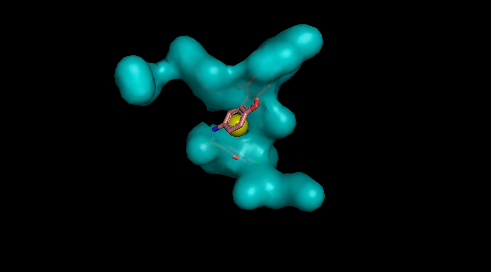
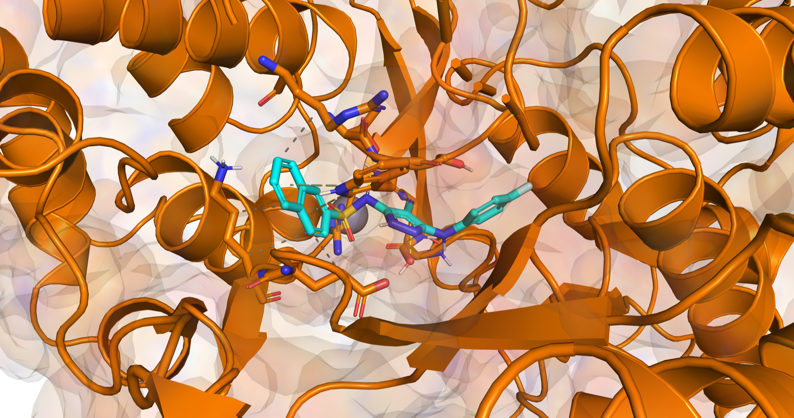
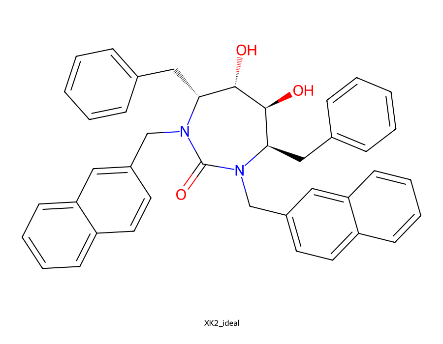

No pose leakage
Retains only the CCD molecular graph—bonds, charge, and stereochemistry—then embeds docking conformers independently. Neither CCD nor crystal coordinates seed the search.
Structural bioinformatics · M-series verified research software
Docking Universal turns an evolving series of research scripts into one auditable package—from receptor and compound preparation through pocket coordinates, result collation, PLIP scenes, and 2D/3D figures. It was developed in part for reproducible use on Apple-silicon M-series systems.

End-to-end package
Build receptor PDBQT files and optimized compound libraries with retained names and SMILES.
Use a bound ligand or fpocket cavities to create explicit center and box coordinates.
Test known ligands across independent conformers and seeds, then lock successful settings for target-matched unknown docking.
Generate PLIP scenes, headless PyMOL PNGs, and generic 2D molecular depictions.
Bound-ligand control
The guided command lists exact RESNAME:CHAIN:RESNUM candidates with atom counts, asks for confirmation, and offers strict coordinate-free RCSB chemical-identity verification or a manual override with a required audit note.
Retains only the CCD molecular graph—bonds, charge, and stereochemistry—then embeds docking conformers independently. Neither CCD nor crystal coordinates seed the search.
Separately tests pose sampling, score ranking, and repeatability without fitting poses onto the crystal ligand.
Records engine-specific settings, seeds, outcomes, and receptor/box hashes before unknown docking is allowed.
Writes crystal interactions, docked interactions, and crystal-versus-docked overlays.
Built for auditability
Docking Universal keeps the scientific context behind each transformation and site choice, alongside machine-ready files and human-readable visuals.
Receptors and compound libraries with traceable source metadata.
Centers, box geometry, and ranked cavity decisions.
Model scores and RMSD fields ready for downstream review.
PLIP interaction data transformed by a custom scene writer into consolidated PyMOL views, plus headless 3D and generic 2D images.
Domain contribution
Structural judgment drives ligand handling, pocket locality checks, centroid choices, overlap suppression, diagnostic thresholds, and the interpretation hierarchy.
science → constraints → validation
Software contribution
Successive script revisions were compared, debugged, documented, made portable, and consolidated into a tested multi-command package with explicit stage boundaries.
iterate → validate → document → package
Representative output
Open the complete automatically generated scientific report (PDF) →


Package interface
The main Conda environment installs preparation, analysis, visualization, and smina. A small optional environment supplies current AutoDock Vina for reproducible comparison runs without disturbing the Apple-silicon PyMOL stack.
Complete installation guide, dependency roles, and M2 notes →
$ conda env create -f environment.yml
$ conda env create -f environments/vina.yml
$ conda activate docking-universal
$ ./bin/docking-universal doctor
available fpocket
available obabel
available plip
available pymol
available smina
available vina (optional environment)
$ ./bin/docking-universal control --complex 1HVR.pdb
$ ./bin/docking-universal screen --protocol protocol.json \
--ligand unknown.sdf --out unknown_run
$ make testResearch preview
Docking Universal packages transparent structural-docking computations. It does not prove biological relevance. The documented 1HVR/XK2 work includes a failed low-effort baseline, a successful three-seed Vina ensemble follow-up, and a failed smina rigid-macrocycle follow-up. These target-specific controls are reported separately rather than treated as general accuracy validation.
Review the raw-input validation →